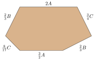
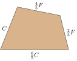
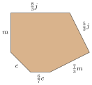
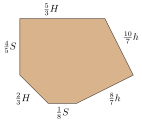

Section 1.2 Combining Like Terms
Algebraic expressions can be large and complicated, so anything we can do to rewrite an expression in a simpler way is helpful. One of the fundamental skills we have for simplifying expressions is combining like terms.
Subsection 1.2.1 Identifying Terms
Definition 1.2.2.
In an algebraic expression, the terms are quantities being added together.
Note that terms are not the same thing as factors, which are quantities being multiplied together. Factors are studied more later in this book.
Example 1.2.3.
List the terms in the expression \(2\ell+2w\text{.}\)
Explanation.
The expression has two terms that are being added, \(2\ell\) and \(2w\text{.}\)
When an expression has subtraction, we can rewrite the it using addition of a negative to make it easier to see exactly what the terms are.
Example 1.2.4.
List the terms in the expression \(-3x^2+5x-4\text{.}\)
Explanation.
We can rewrite this expression as \(-3x^2+5x+(-4)\) to see that the terms are \(-3x^2\text{,}\) \(5x\text{,}\) and \(-4\text{.}\) Note that the third term is \(-4\text{,}\) not just \(4\text{.}\)
Example 1.2.5.
List the terms in the expression \(3\,\text{cm}+2\,\text{cm}-3\,\text{cm}+2\,\text{cm}\text{.}\)
Explanation.
This expression has four terms: 3 cm, 2 cm, -3 cm, and 2 cm.
Checkpoint 1.2.6.
List the terms in the expression \(5x-4x+10z\text{.}\)
Explanation.
The terms are \(5x\text{,}\) \(-4x\text{,}\) and \(10z\text{.}\)
Subsection 1.2.2 Combining Like Terms
If you have \(3\,\text{cm}+2\,\text{cm}\text{,}\) it is natural to add those together to get 5 cm. That works because their units (cm) are the same. The same idea applies to other terms, even ones that don’t have units. For example, with \(2x+3x\text{,}\) we have \(2\) things and then \(3\) more of those things. All together, we have \(5\) of those things. So \(2x+3x\) is the same as \(5x\text{.}\)
Terms in an algebraic expression that can be combined by adding them together into one new term are called like terms.
-
Sometimes like terms use a common variable, like how \(2x+3x\) has terms that each use \(x\text{.}\) This simplifies to \(5x\text{.}\)
-
Sometimes like terms use the same units, like how \(3\,\text{cm}+2\,\text{cm}\) has terms that each use cm. This simplifies to 5 cm.
-
Sometimes like terms have something else in common, like how \(3\sqrt{7}+2\sqrt{7}\) has terms that each use \(\sqrt{7}\text{.}\) This simplifies to \(5\sqrt{7}\text{.}\)
Example 1.2.7.
In the expressions below, look for like terms and then simplify where possible by adding or subtracting.
-
\(\displaystyle 5\,\text{in}+20\,\text{in}\)
-
\(\displaystyle 16\,\text{ft}^2+4\,\text{ft}\)
-
\(\displaystyle 2\,\apple+5\,\apple\)
-
\(\displaystyle 5\,\text{min}+12\,\text{ft}\)
-
\(\displaystyle 5\,\dog-2\,\cat\)
-
\(\displaystyle 20\,\text{m}-6\,\text{m}\)
Explanation.
We can combine terms with the same units, but we cannot combine terms with distinct units such as minutes and feet.
-
\(\displaystyle 5\,\text{in}+20\,\text{in}=25\,\text{in}\)
-
\(16\,\text{ft}^2+4\,\text{ft}\) cannot be combined
-
\(\displaystyle 2\,\apple+5\,\apple=7\,\apple\)
-
\(5\,\text{min}+12\,\text{ft}\) cannot be combined
-
\(5\,\dog-2\,\cat\) cannot be combined
-
\(\displaystyle 20\,\text{m}-6\,\text{m}=14\,\text{m}\)
One of the examples from Example 7 was \(16\,\text{ft}^2+4\,\text{ft}\text{.}\) The units on these two terms look similar, but they are different. 16 ft2 is a measurement of how much area something has. 4 ft is a measurement of how long something is. Figure 8 illustrates this.

Example 1.2.9.
Simplify each expression by combining like terms (if possible).
-
\(\displaystyle \frac{5}{7}x-\frac{2}{7}x+\frac{3}{7}y\)
-
\(\displaystyle \frac{1}{2}x+\frac{1}{2}x^2\)
-
\(\displaystyle -3.01r+1.2s-5t\)
-
\(\displaystyle \frac{2}{3}y+\frac{5}{6}y\)
-
\(\displaystyle \frac{10}{3}t-\frac{1}{2}x-t\)
-
\(\displaystyle x-0.15x\)
Explanation.
-
This expression has two like terms, \(\frac{5}{7}x\) and \(-\frac{2}{7}x\text{,}\) which we can combine. We have to subtract \(\frac{5}{7}-\frac{2}{7}\text{,}\) which is straightforward since they have the same denominator.\begin{equation*} \highlight{\frac{5}{7}x-\frac{2}{7}x}+\frac{3}{7}y =\highlight{\frac{3}{7}x}+\frac{3}{7}y \end{equation*}We don’t combine \(\frac{3}{7}x\) and \(\frac{3}{7}y\) because \(x\) and \(y\) are different variables.
-
This expression cannot be simplified because the variable parts are not the same. We cannot add \(x\)-terms with \(x^2\)-terms just like we cannot add feet (a measure of length) with square feet (a measure of area).
-
There aren’t any like terms.
-
The two terms are like terms. To combine them, we need to add \(\frac{2}{3}+\frac{5}{6}\text{.}\) For a review of adding fractions with different denominators, see Section A.2. In this case,\begin{align*} \frac{2}{3}+\frac{5}{6}\amp=\frac{2}{3}\cdot\frac{2}{2}+\frac{5}{6}\\ \amp=\frac{4}{6}+\frac{5}{6}\\ \amp=\frac{9}{6}=\frac{3}{2} \end{align*}So \(\frac{2}{3}y+\frac{5}{6}y=\frac{3}{2}y\text{.}\)
-
There are two like terms: \(\frac{10}{3}t\) and \(-t\text{.}\) A lonely \(t\) is usually just written as \(t\text{,}\) but we can think of it as \(1t\text{.}\) So we are combining \(\frac{10}{3}t\) and \(-t\) and we need to subtract \(\frac{10}{3}-1\text{.}\)\begin{align*} \frac{10}{3}-1\amp=\frac{10}{3}-\frac{3}{3}\\ \amp=\frac{7}{3} \end{align*}Our two terms combine to make \(\frac{7}{3}t\text{.}\) There was another term when this started and the final simplified expression is \(\frac{7}{3}t-\frac{1}{2}x\text{.}\)
-
This expression can be thought of as \(1.00x-0.15x\text{.}\) Subtracting decimals \(1.00-0.15\text{,}\) the result is \(0.85\text{.}\) So we have \(0.85x\text{.}\)
Checkpoint 1.2.10.
Simplify each expression by combining like terms (if possible).
(a)
\(x+0.25x\)
Explanation.
Think of this expression as \(1.00x+0.25x\) and simplify to get \(1.25x\text{.}\)
(b)
\(\frac{4}{9}x-\frac{7}{10}y+\frac{2}{3}x\)
Explanation.
This expression has two like terms that can be combined: \(\frac{4}{9}x\) and \(\frac{2}{3}x\text{.}\) To combine them, we need to add the fractions \(\frac{4}{9}+\frac{2}{3}\text{.}\)
\begin{equation*}
\begin{aligned}
\frac{4}{9}+\frac{2}{3}\amp=\frac{4}{9}+\frac{6}{9}\\
\amp=\frac{10}{9}
\end{aligned}
\end{equation*}
So \(\frac{4}{9}x+\frac{2}{3}x=\frac{10}{9}x\text{.}\) And together with the third term, the answer is \(\frac{10}{9}x-\frac{7}{10}y\text{.}\)
(c)
\(\frac{5}{6}y-\frac{8}{15}y+\frac{2}{3}y^2\)
Explanation.
In this expression we can combine the \(y\)-terms. We need to subtract the fractions \(\frac{5}{6}-\frac{8}{15}\text{.}\)
\begin{equation*}
\begin{aligned}
\frac{5}{6}-\frac{8}{15}\amp=\frac{25}{30}-\frac{16}{30}\\
\amp=\frac{9}{30}\\
\amp=\frac{3}{10}
\end{aligned}
\end{equation*}
So \(\frac{5}{6}y-\frac{8}{15}y=\frac{3}{10}y\text{.}\) And together with the third term, the answer is \(\frac{3}{10}y+\frac{2}{3}y^2\text{.}\)
(d)
\(4x+1.5y-9z\)
Explanation.
This expression cannot be simplified further because there are not any like terms.
Subsection 1.2.3 Applications
The perimeter of a shape is the length of a strip of tape that could be taped tightly around the shape. When a shape has straight side edges, the perimeter comes from adding all of the side lengths together. This can lead to like terms that can be combined.
Example 1.2.11.
Find the perimeter of this shape, which is not drawn to scale. Simplify the perimeter expression as much as possible.

Explanation.
The perimeter is the result from adding the five sides together: \(2x+3y+1.5x+5y+x\text{.}\) There are three \(x\)-terms that sum to \(4.5x\text{,}\) and two \(y\)-terms that sum to \(8y\text{.}\) So the perimeter is \(4.5x+8y\text{.}\)
Checkpoint 1.2.12.
Find the perimeter of this shape, which is not drawn to scale. Simplify the perimeter expression as much as possible.

Explanation.
The perimeter is the result from adding the six sides together: \(\frac{3}{2}A+\frac{2}{3}B+\frac{3}{4}C+2A+\frac{2}{3}B+\frac{8}{17}C\text{.}\) There are two \(A\)-terms, two \(B\)-terms, and two \(C\)-terms. We need to find:
\begin{equation*}
\begin{aligned}
\frac{3}{2}+2\amp=\frac{3}{2}+\frac{2}{1}\cdot\frac{2}{2} \amp\qquad\frac{2}{3}+\frac{2}{3}\amp=\frac{4}{3} \amp\qquad\frac{3}{4}+\frac{8}{17}\amp=\frac{3}{4}\cdot\frac{17}{17}+\frac{8}{17}\frac{4}{4}\\
\amp=\frac{3}{2}+\frac{4}{2} \amp\amp \amp\amp=\frac{51}{68}+\frac{32}{68}\\
\amp=\frac{7}{2} \amp\amp \amp\amp=\frac{83}{68}
\end{aligned}
\end{equation*}
So the perimeter is \(\frac{7}{2}A+\frac{4}{3}B+\frac{83}{68}C\text{.}\)
Sometimes it makes sense to add two algebra expressions together, and that may give an opportunity to combine like terms.
Example 1.2.13.
A chemist has a bottle with 1.2 L of water mixed with 0.3 L of gasoline. At this time, they have forgotten the density of water (in g⁄L) and the density of gasoline (also in g⁄L) so they use \(w\) and \(g\) as variables for these densities. This means \(1.2w+0.3g\) is the total mass of this mixture, in grams.
There is a second bottle, with 0.9 L of water mixed with 0.5 L of gasoline. The chemist pours it all together. What is the mass of the combined mixture?
Explanation.
The first mass is \(1.2w+0.3g\) grams, and the second mass is \(0.9w+0.5g\) grams. So together, the mass in grams is:
\begin{align*}
(1.2w+0.3g)+(0.9w+0.5g)\amp=\firsthighlight{1.2w}+\secondhighlight{0.3g}+\firsthighlight{0.9w}+\secondhighlight{0.5g}\\
\amp=2.1w+0.8g
\end{align*}
Reading Questions 1.2.4 Reading Questions
1.
What should you be aware of when there is subtraction in an algebraic expression and you are identifying its terms?
2.
Describe at least two different ways in which a pair of terms would be considered to be “like terms”.
3.
What might help when you are combining like terms, and one of the terms is a lonely variable like \(x\) or \(y\text{?}\)
Exercises 1.2.5 Exercises
Prerequisite/Review Skills
These exercises are only intended for students who are rusty with adding/subtracting decimals and fractions. If you feel comfortable, proceed to Skills Practice.
Fraction Arithmetic.
Add or subtract the fractions.
1.
\({{\frac{3}{13}}}+{{\frac{5}{13}}}\)
2.
\({{\frac{5}{13}}}+{{\frac{9}{13}}}\)
3.
\({{\frac{15}{17}}}-{{\frac{7}{17}}}\)
4.
\({{\frac{9}{17}}}-{{\frac{4}{17}}}\)
5.
\({{\frac{9}{16}}}+{{\frac{11}{16}}}\)
6.
\({{\frac{7}{15}}}+{{\frac{13}{15}}}\)
7.
\({{\frac{15}{16}}}-{{\frac{7}{16}}}\)
8.
\({{\frac{17}{18}}}-{{\frac{5}{18}}}\)
9.
\({{\frac{15}{4}}}+11\)
10.
\({{\frac{3}{2}}}+5\)
11.
\(7-{{\frac{4}{11}}}\)
12.
\(3-{{\frac{5}{13}}}\)
13.
\({{\frac{1}{9}}}+{{\frac{3}{13}}}\)
14.
\({{\frac{7}{11}}}+{{\frac{9}{14}}}\)
15.
\({{\frac{3}{7}}}-{{\frac{1}{6}}}\)
16.
\({{\frac{2}{5}}}-{{\frac{1}{8}}}\)
17.
\({{\frac{7}{11}}}+{{\frac{2}{99}}}\)
18.
\({{\frac{4}{11}}}+{{\frac{8}{33}}}\)
19.
\({{\frac{1}{9}}}-{{\frac{2}{63}}}\)
20.
\({{\frac{1}{2}}}-{{\frac{9}{28}}}\)
21.
\({{\frac{3}{7}}}+{{\frac{9}{28}}}\)
22.
\({{\frac{2}{11}}}+{{\frac{8}{77}}}\)
23.
\({{\frac{4}{5}}}-{{\frac{9}{55}}}\)
24.
\({{\frac{2}{3}}}-{{\frac{11}{30}}}\)
25.
\({{\frac{3}{40}}}+{{\frac{4}{15}}}\)
26.
\({{\frac{7}{36}}}+{{\frac{3}{16}}}\)
27.
\({{\frac{7}{6}}}-{{\frac{3}{20}}}\)
28.
\({{\frac{7}{10}}}-{{\frac{4}{35}}}\)
29.
\({{\frac{3}{10}}}+{{\frac{5}{18}}}\)
30.
\({{\frac{10}{21}}}+{{\frac{4}{15}}}\)
31.
\({{\frac{9}{10}}}-{{\frac{8}{45}}}\)
32.
\({{\frac{5}{6}}}-{{\frac{9}{14}}}\)
Skills Practice
Identifying Terms.
List the terms in each expression.
33.
\({-{\frac{7}{10}}e+{\frac{3}{8}}C-g+7.3c}\)
34.
\({87M-Y-R+{\frac{7}{10}}c}\)
35.
\({-u+2.8t-18t+u}\)
36.
\({-c-{\frac{1}{5}}Q-3.9c+63c}\)
37.
\({{\frac{3}{10}}z^{2}-13+49z}\)
38.
\({-83y^{6}-45y^{7}+{\frac{5}{3}}y^{9}}\)
39.
\({77+x^{5}-0.5x^{5}}\)
40.
\({-1.9z^{4}-4.1z+z}\)
Combining Like Terms.
Simplify the expression by combining like terms if possible.
41.
\({-9.1z+9.6z}\)
42.
\({37F+9.5F}\)
43.
\({{\frac{10}{9}}L+{\frac{1}{2}}L}\)
44.
\({36R-{\frac{3}{10}}R}\)
45.
\({8.3X+9.7V}\)
46.
\({75c+D}\)
47.
\({h-9h^{2}-7.5h^{5}}\)
48.
\({5n^{3}+4.1n^{4}+n^{5}}\)
49.
\({-{\frac{5}{3}}t+{\frac{9}{4}}B+t}\)
50.
\({-{\frac{10}{7}}z+{\frac{9}{8}}i+{\frac{7}{9}}z}\)
51.
\({69F+6.8F-0.3R}\)
52.
\({82L-64y+6.6L}\)
53.
\({-{\frac{1}{2}}R^{3}+{\frac{10}{9}}R^{3}+{\frac{3}{2}}R^{5}}\)
54.
\({{\frac{3}{2}}W^{5}-W^{5}+{\frac{2}{9}}W^{3}}\)
55.
\({8.8c+6.8c^{3}-3.6c^{3}}\)
56.
\({-9.7h-0.9h^{3}+6.7h^{3}}\)
57.
\({6n+{\frac{7}{6}}n+3n}\)
58.
\({{\frac{3}{10}}t+{\frac{4}{3}}t-t}\)
59.
\({-16z-3.3z+2.4z}\)
60.
\({3.3F+71F+7.3F}\)
61.
\({-{\frac{5}{2}}K+{\frac{5}{9}}K-2s-{\frac{8}{9}}s}\)
62.
\({{\frac{9}{2}}R-2R+{\frac{1}{2}}a+{\frac{9}{5}}a}\)
63.
\({4.4W+1.1H+5.1W+86H}\)
64.
\({5.8r+c-2.8r-c}\)
65.
\({h-h^{3}+11h+h^{3}}\)
66.
\({-12n^{3}+0.4n+9.9n^{3}+n}\)
67.
\({{\frac{1}{2}}t^{6}+{\frac{1}{2}}t^{6}-{\frac{7}{10}}t^{2}+t^{2}}\)
68.
\({-{\frac{9}{4}}y^{2}+{\frac{3}{10}}y^{5}+{\frac{4}{7}}y^{2}-y^{5}}\)
Applications
Perimeter.
Write a simplified expression for the perimeter of the given shape (which is not drawn to scale).
69.

70.
71.
72.
73.

74.

75. Office Lunch.
Every Friday, an office supervisor provides catered lunches for everyone working in the office. People can order a sandwich (costs \(S\) dollars) or a burrito (costs \(B\) dollars).
One week, the office ordered \(5\) sandwiches and \(16\) burritos. So the bill came to \({5S+16B}\) dollars.
(a)
The next week, the office ordered \(10\) sandwiches and \(11\) burritos. How much was the bill that week, in dollars?
(b)
What was the combined bill for these two weeks?
76. Pies and Cakes.
Frances and Camilla are co-owners of a pastry shop. Frances bakes pies and Camilla bakes cakes. Frances is able to bake \(p\) pies each day she works and Camilla is able to bake \(c\) cakes each day she works.
One month, Frances worked \(17\) days and Camilla worked \(20\) days. That month they produced \({17p+20c}\) baked goods in total.
(a)
The next month, Frances worked \(21\) days and Camilla worked \(19\) days. How many baked goods did they produce that month?
(b)
How many baked goods was that in total for those two months?
77. Sportsball.
Sportsball is a game similar to basketball. There are three ways for a team to score points: a “long field goal” earns \(L\) points; a “short field goal” earns \(S\) points; and a “penalty shot” earns \(P\) points.
In the first half of one game, a team scored \(24\) penalty shots, \(41\) long field goals, and \(45\) short field goals. So they earned \({24P+41L+45S}\) points.
(a)
In the second half of the game, that same team scored \(25\) penalty shots, \(43\) long field goals, and \(47\) short field goals. How many points did they earn during the second half?
(b)
How many points did the team score in total?
78. Metal Recycling.
A metals recycling plant makes its revenue from selling aluminum at \(A\) dollars per ton, steel at \(S\) dollars per ton, and tin at \(T\) dollars per ton. One week, they processed \(3.19\) tons of aluminum, \(2.61\) tons of steel, and \(2.96\) tons of tin. So they generated \({3.19A+2.61S+2.96T}\) dollars in revenue.
(a)
The next week, they processed \(2.89\) tons of aluminum, \(3.29\) tons of steel, and \(2.72\) tons of tin. How much revenue (in dollars) did this generate that week?
(b)
How much revenue (in dollars) was that in total those two weeks?